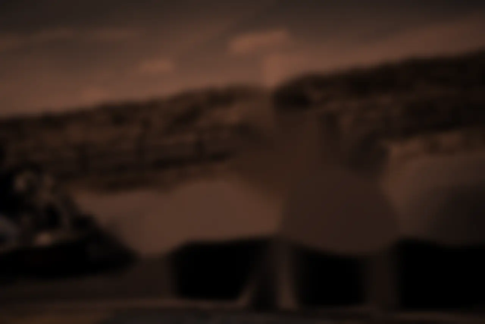
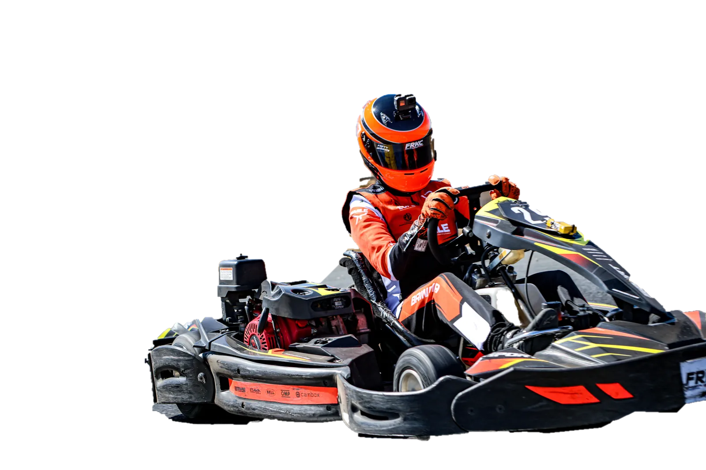
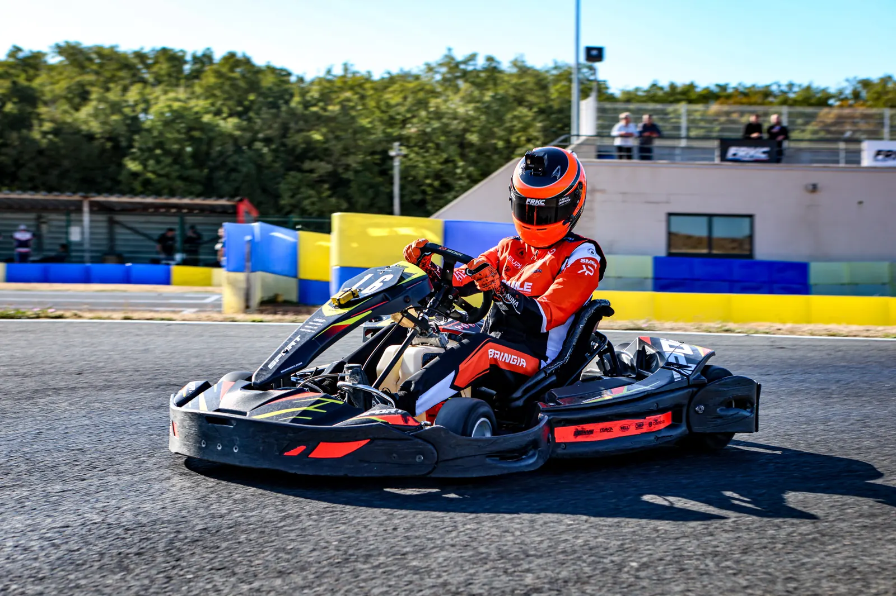
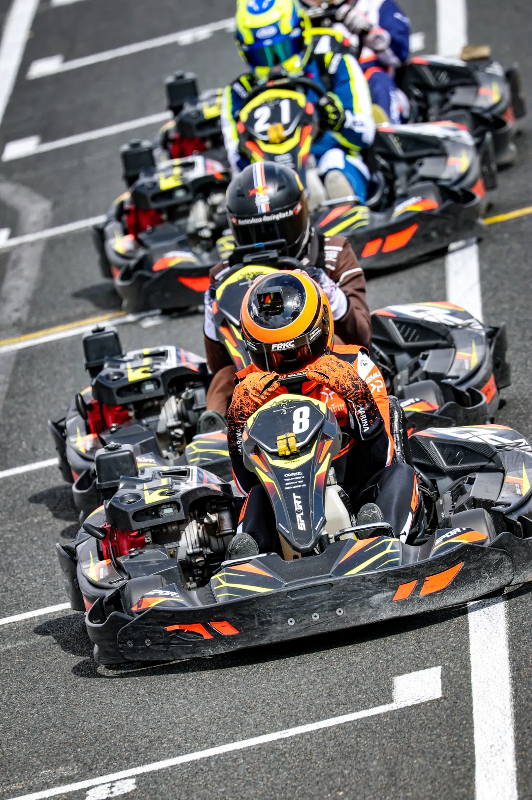
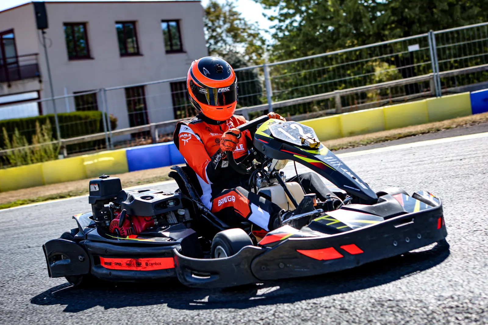
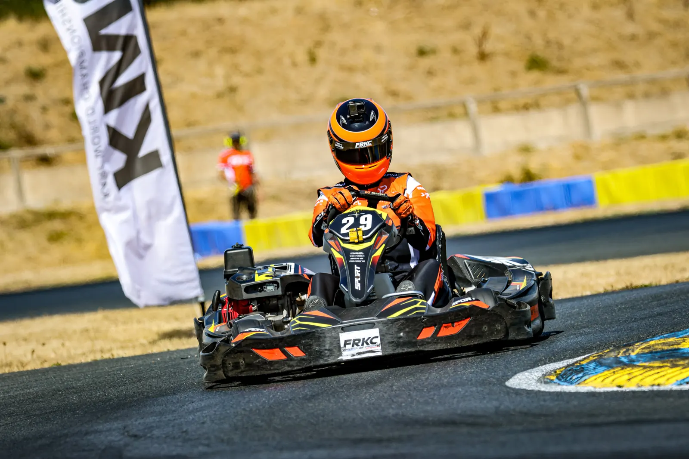
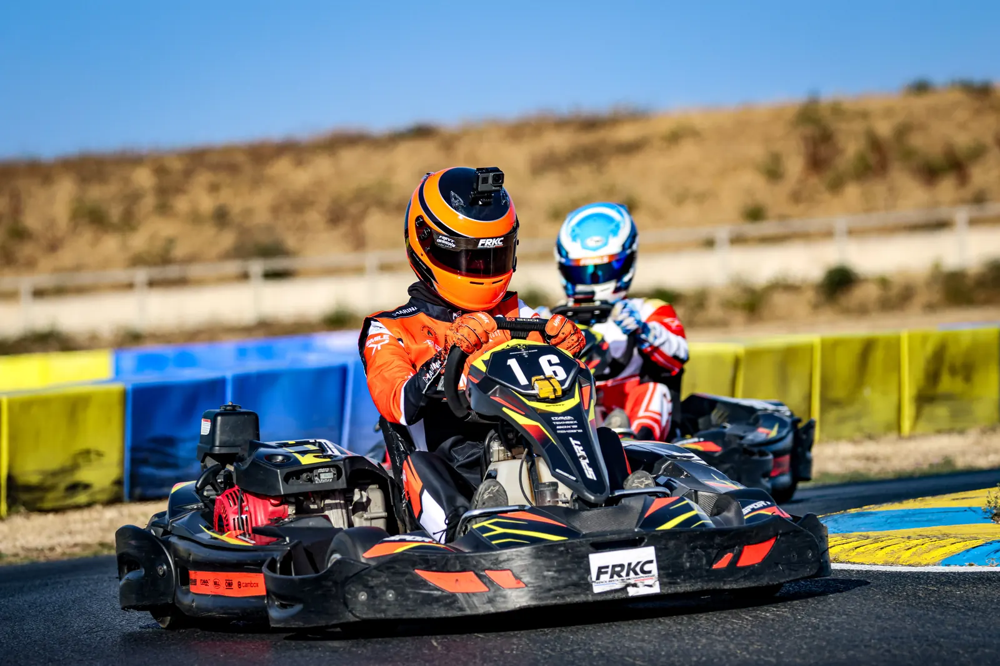
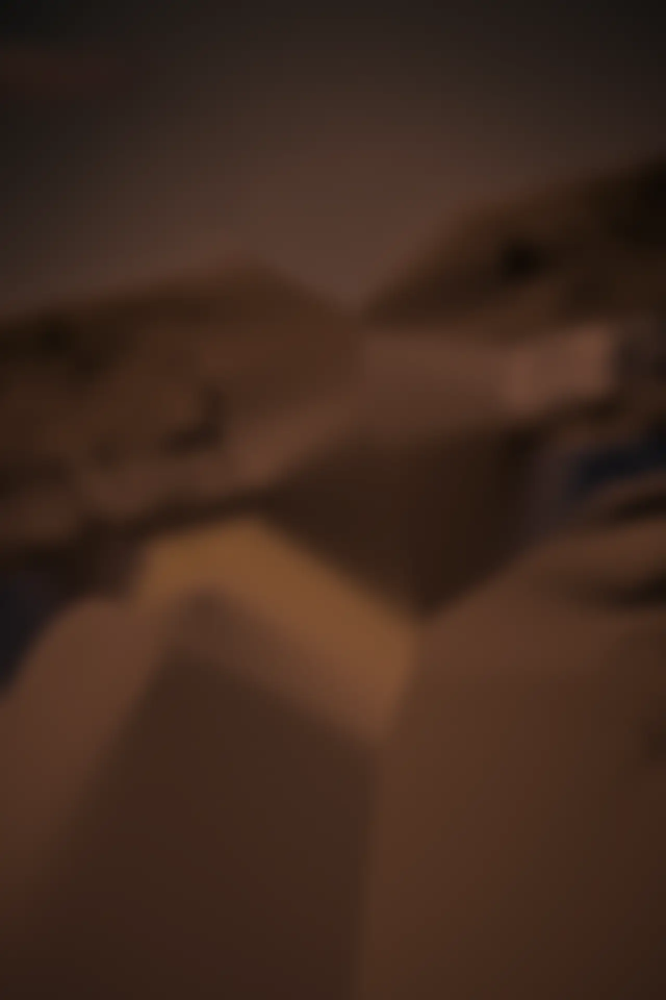
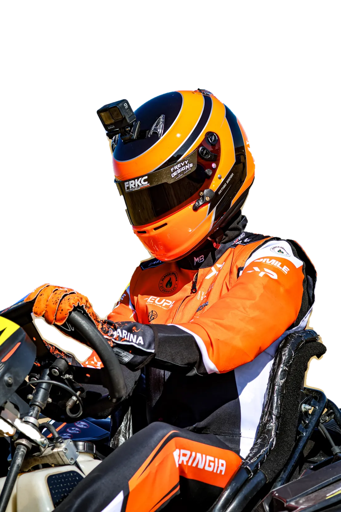

Pilote de kartingFRKCCRKI
Mathéo Bringia
Performances et ambition
Karting de location, à fond. Champion CRKI Junior 2025, meilleur Junior français au FRKC Indoor 2026.
Faites défiler : un tour d’Angerville, de nuit
01Ligne droite des stands
Les chiffres officiels.
Tout vient des classements publiés par l’organisateur du FRKC et du CRKI. En karting de location, tout le monde a le même kart : c’est le pilote qui fait le chrono.
- 1erChampion CRKI JuniorSaison 1, 2025, sur 28 pilotes
- P2Meilleure manche au FRKCManche 4, FRKC Indoor 2026
- 19e/100FRKC Indoor 2026Meilleur Junior français
- 25e/100FRKC Outdoor 2026À une place de la finale
Au FRKC39e / 5519e / 10025e / 100sur des plateaux deux fois plus grands
02Dernière course · FRKC Outdoor 2026, Angerville
À une place de la finale.
Le 23 août 2026, au Circuit International Anthoine Hubert : cinq manches et une demi-finale, face à cent pilotes. 25e sur 100, premier pilote non qualifié pour la finale du TOP 24.


H1 à DFSes manches, tour de chronométrage
- H1Manche 18e
- H2Manche 213e
- H3Manche 35e
- H4Manche 43e
- H5Manche 511e
- DFDemi-finale5e
03Les écrans de la tour
En piste, en grand.
Ses vraies photos du FRKC Outdoor 2026, sur les écrans du circuit.





FRKC Outdoor 2026, Angerville · Photos : auteur à compléter
04Freinage de l’épingle du Coeur
Prochain départ.
FRKC Indoor 2027
5 au 7 février 2027 · Metz Kart Indoor, Augny (Moselle) · Inscrit, confirmé
Vendredi : entraînements officiels. Samedi : entraînements et manche 1. Dimanche : manches 2 à 5, demi-finale, finale.
- 26 au 31 juillet 2027KWC 2027, le mondial exempleKart Center Campillos, Campillos (Espagne)
- 2027FRKC Outdoor 2027 exempleCircuit International Anthoine Hubert, Angerville (Essonne)
05Courbe des tribunes · Radio paddock
Dernières actus.
- Inscrit au FRKC Indoor 2027Rendez-vous du 5 au 7 février 2027 au Metz Kart Indoor, à Augny. L’inscription est confirmée.Lire
- 25e sur 100 à Angerville, à une place de la finaleAu FRKC Outdoor 2026, il signe la 5e place de sa demi-finale et un podium en manche 4.Lire
- Une soirée pour ses partenairesLe 27 mai 2026, Mathéo réunit ses partenaires en plein air, autour de ses trophées et de son casque.Lire
06Épingle de la cafétéria · Le pilote
Casque fermé, visière baissée.


En karting de location, les karts sont fournis par la piste et tirés au sort. Ce qui reste au pilote : sa trajectoire, son freinage, et sa tête froide dans le trafic.
- 2025Champion CRKI Junior
- 2025-2026Vice-champion CRKI 90 kg
- 2026Meilleur Junior français, FRKC Indoor
- 2027Inscrit au FRKC Indoor, Metz
07Les panneaux du bord de piste
Ils roulent avec lui.
VIP7
Hot-Dog Style / L’Agence Alex Le Gourmand / KP, Kevin Petit / Alsace Énergies et Granulés / Smile / EUPL / Évolution Graphique
Premium2
Cigo Flam’s / LS Téléprospection
Prestige5
Laurent Beck / Opticus / Kaisen / AutoEasy / Philippe Haas, AXA
Équipement2
Marina Racewear (nouvel onglet)exemple / Frevy Designs (nouvel onglet)exemple
08Ligne d’arrivée
Rejoindre l’aventure.
Partenaire, organisateur, média, ou simplement fan : écrivez-lui. Mathéo vous répond lui-même.
Rejoindre l’aventure Devenir partenaire
Prochain départ : FRKC Indoor 2027 · 5 au 7 février · Metz Kart Indoor